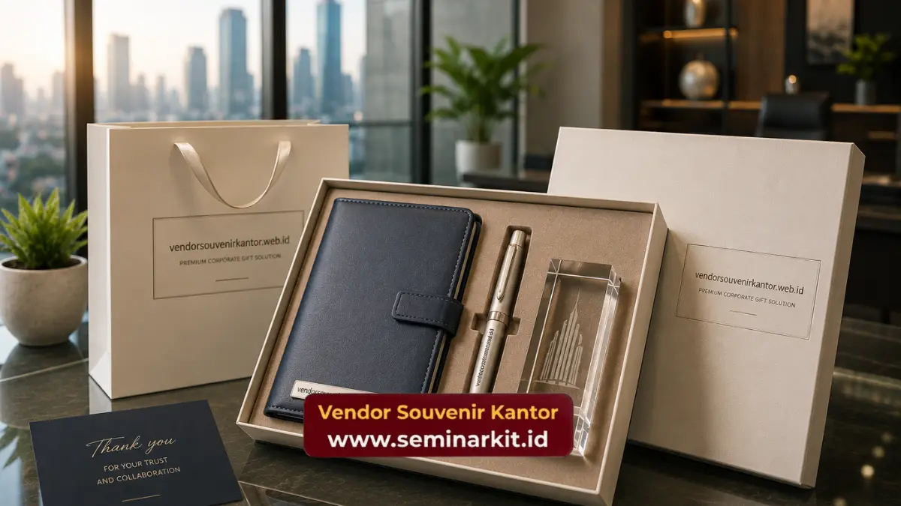

Harga souvenir kantor premium ditentukan oleh beberapa faktor utama, seperti jenis material, tingkat kerumitan desain, teknik personalisasi logo, dan jumlah unit yang dipesan.
Karena kombinasi faktor tersebut berbeda pada setiap pesanan, harga souvenir premium umumnya bervariasi dan sebaiknya dikonsultasikan langsung sesuai kebutuhan spesifik perusahaan.
Vendor Souvenir Kantor menyediakan konsultasi penawaran harga souvenir premium sesuai anggaran perusahaan Anda.
- Harga souvenir kantor premium dipengaruhi oleh material, desain, teknik personalisasi, dan jumlah pesanan.
- Produk dengan material seperti kristal atau kulit asli umumnya memiliki struktur biaya yang berbeda dibanding produk berbahan plastik atau logam standar.
- Jumlah unit pesanan turut memengaruhi efisiensi biaya produksi per unit.
- Teknik custom logo yang dipilih juga berkontribusi terhadap total biaya produksi.
- Penawaran harga yang akurat sebaiknya diperoleh melalui konsultasi langsung dengan vendor souvenir kantor.
Apa Saja Faktor yang Mempengaruhi Harga Souvenir Kantor Premium?
Harga souvenir kantor premium tidak ditentukan oleh satu faktor tunggal, melainkan kombinasi dari beberapa aspek produksi yang saling memengaruhi satu sama lain.
Memahami faktor-faktor ini akan membantu perusahaan menyusun anggaran souvenir korporat secara lebih realistis.
Bagaimana Material Mempengaruhi Harga Souvenir Premium?
Material menjadi salah satu faktor utama penentu harga souvenir kantor premium. Produk berbahan kristal, kulit asli, atau logam solid.
Umumnya memiliki struktur biaya yang berbeda dibanding produk berbahan plastik atau logam lapis standar, mengingat proses pengolahan material premium yang lebih kompleks.
Selain itu, ketebalan dan kualitas material juga turut memengaruhi daya tahan produk dalam jangka panjang.
Apakah Teknik Custom Logo Mempengaruhi Harga Souvenir?
Teknik personalisasi logo turut berkontribusi terhadap total biaya produksi souvenir premium.
Teknik ukir laser pada material keras seperti kristal umumnya memerlukan proses yang berbeda dibanding teknik emboss pada kulit atau cetak UV pada logam, sehingga masing-masing teknik memiliki karakteristik biaya tersendiri.
Tingkat kerumitan desain logo, termasuk jumlah warna dan detail, juga dapat memengaruhi struktur biaya personalisasi.
Bagaimana Jumlah Pesanan Mempengaruhi Efisiensi Biaya?
Jumlah unit yang dipesan umumnya berkorelasi dengan efisiensi biaya produksi per unit. Pemesanan dalam jumlah lebih besar biasanya memungkinkan efisiensi pada tahap produksi,
Seperti penggunaan cetakan atau setting mesin yang dapat dimanfaatkan untuk banyak unit sekaligus.
Oleh karena itu, perusahaan yang memiliki kebutuhan souvenir dalam skala besar disarankan untuk merencanakan pemesanan lebih awal agar dapat mempertimbangkan opsi jumlah yang paling efisien.
Mengapa Harga Souvenir Premium Bisa Berbeda antar Vendor?
Perbedaan harga antar penyedia souvenir korporat umumnya dipengaruhi oleh perbedaan kualitas material yang digunakan, standar produksi, serta layanan tambahan seperti konsultasi desain dan pengiriman.
Perusahaan yang membandingkan harga sebaiknya juga memperhatikan aspek kualitas dan layanan secara menyeluruh, tidak hanya dari sisi nominal harga semata, agar hasil akhir souvenir tetap sesuai dengan citra brand yang diinginkan.

Apakah Harga Lebih Tinggi Selalu Berarti Nilai yang Lebih Baik?
Harga yang lebih tinggi tidak selalu secara otomatis mencerminkan nilai yang lebih baik bagi perusahaan, melainkan perlu dilihat dari kesesuaian antara kualitas produk, daya tahan, dan tujuan pemberian souvenir.
Souvenir dengan harga lebih tinggi namun memiliki daya tahan jangka panjang, seperti produk berbahan kulit asli atau logam solid, dapat memberikan nilai eksposur brand yang lebih lama dibanding produk dengan harga lebih rendah namun cepat rusak atau jarang digunakan kembali oleh penerimanya.
Oleh karena itu, perusahaan sebaiknya mempertimbangkan nilai jangka panjang dari sebuah souvenir, bukan hanya nominal harga per unit semata, agar anggaran yang dialokasikan benar-benar memberikan dampak branding yang optimal bagi perusahaan.
Bagaimana Cara Menyusun Anggaran Souvenir Kantor Premium?
Penyusunan anggaran souvenir kantor premium sebaiknya dimulai dengan menentukan tujuan pemberian souvenir, jumlah penerima, serta jenis acara yang melatarbelakangi pemberian souvenir tersebut.
Setelah kebutuhan dasar ini jelas, perusahaan dapat mengalokasikan anggaran berdasarkan kategori produk yang diinginkan.
Misalnya alokasi lebih besar untuk penerima level direksi dan alokasi yang lebih efisien untuk penerima dalam skala luas seperti seluruh karyawan.
Konsultasi langsung dengan penyedia souvenir korporat juga sangat membantu dalam menyusun anggaran yang realistis, karena penyedia dapat memberikan gambaran struktur biaya berdasarkan kombinasi material, desain, dan jumlah pesanan yang spesifik sesuai kebutuhan perusahaan.
Perusahaan juga disarankan untuk menyisakan sedikit ruang fleksibilitas dalam anggaran yang disusun, mengingat kebutuhan tambahan seperti revisi desain atau perubahan jumlah penerima terkadang muncul mendekati tanggal acara.
Ruang fleksibilitas ini akan membantu perusahaan tetap dapat memenuhi kebutuhan souvenir tanpa harus mengorbankan kualitas produk yang dipilih di awal.
Kesimpulan
Harga souvenir kantor premium sangat dipengaruhi oleh kombinasi material, teknik personalisasi, dan jumlah pesanan, sehingga penting bagi perusahaan untuk melakukan konsultasi langsung guna mendapatkan gambaran biaya yang akurat sesuai kebutuhan spesifik.
Untuk mendapatkan penawaran harga souvenir kantor premium yang sesuai dengan anggaran perusahaan Anda.
Tim Vendor Souvenir Kantor siap membantu melalui konsultasi langsung. Kunjungi vendorsouvenirkantor.web.id untuk mendapatkan penawaran harga terbaik sesuai kebutuhan acara dan anggaran perusahaan Anda.

Banner promosi: klik gambar untuk langsung terhubung ke WhatsApp tim sales.